Same content as the current sauleskoki.lv, plus photos from the Facebook page. Click a card to open that version. Each one also works on phones — try narrowing the window.
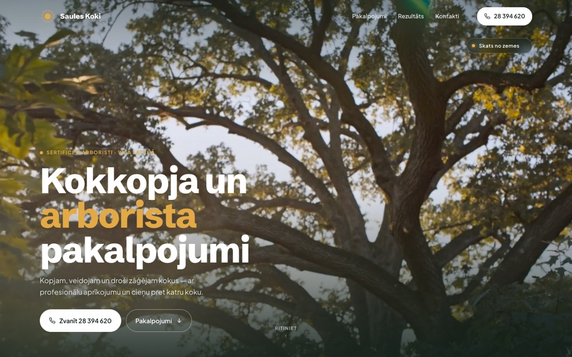
Version 12's look cut to about five screens, with motion that needs no reading. The clip-to-crown hero stays. Then a slow moving line with the trust points, six photo tiles with just the service names, the press-and-hold before/after, four chosen photos, and the contact block. No statement, no steps, no team, no FAQ.
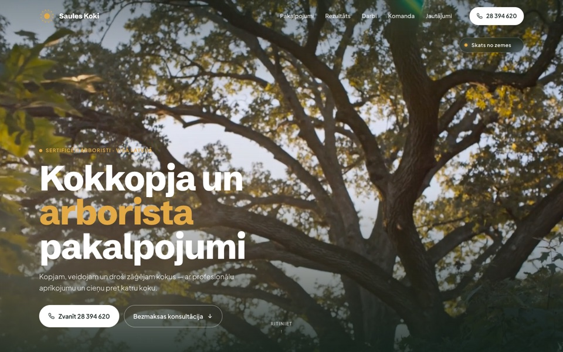
A bright, modern page with the Kling clip as the first screen: scroll, and the view climbs from the garden up into the crown (the company's own photo from the treetop). Motion only where it explains something: the nav underline slides to the section you are in, the services are a rail you can drag, press and hold the photo to see the tree after the work, a slider runs through the four stump steps, and six chosen photos open full-size. "Save contact" puts the number into the visitor's phone.
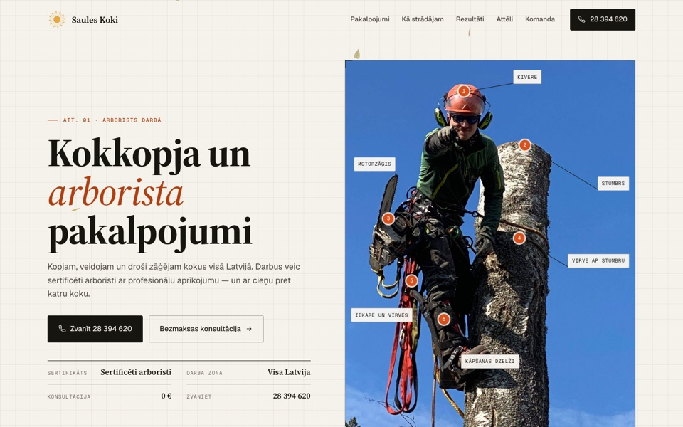
Drafting paper, serif headings, one signal-orange accent, the original gold logo. Real photos only, no video: an AI clip would not fit a manual. A "Katrs koks ir citāds" section says everything starts with a call, the before/after blinks between the two photos, and six photos as numbered plates with a list. A few birch, oak and linden leaves drift slowly behind the content. Small motions that explain something: step lines draw in order, plates fade between photos, a service card's "Att." link lights up the plate it jumps to.
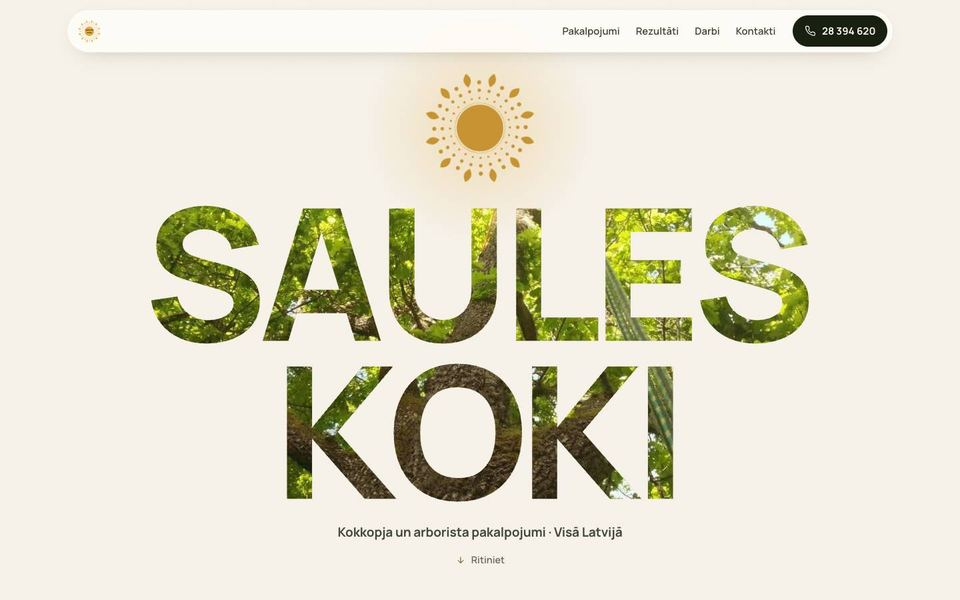
Giant "SAULES KOKI" letters cut out of a cream page, with the sunlit oak inside. Scroll and the camera dives through the K into the tree. Service cards stack like a deck; words fill in as you scroll; gallery columns drift; sunlight follows the mouse in the contact section.
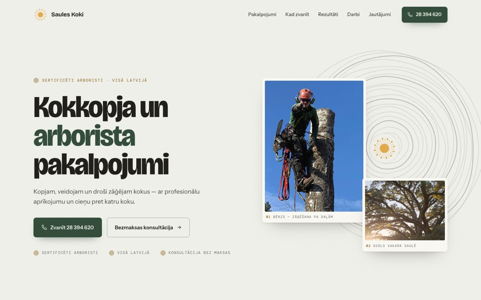
Light and calm, like a field guide. Hand-drawn tree rings behind the photo cards, the logo at their heart. New ideas: a "Kad zvanīt?" year wheel where a small sun sits on today's date, services as five photo panels that open on hover, a before/after pair with one magnifier that shows the same spot in both photos, and six chosen photos. Questions are shown side by side, nothing is folded away.
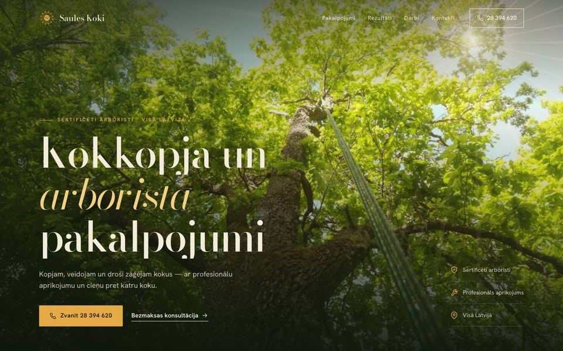
Premium and calm. Your oak photo in warm golden-hour colour with a soft sun flare. Sunlight sweeps across the headline as you scroll. Services: the photo on the left changes as you read each one.
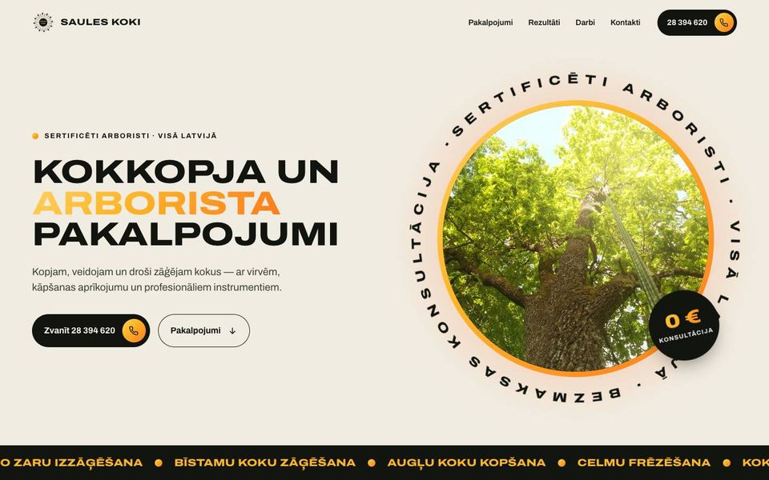
Bold, like a poster. A big sun circle with the tree inside and rotating text. All photos tinted green-and-gold so they match; full colour on hover. Ends with the sun setting behind the phone number.
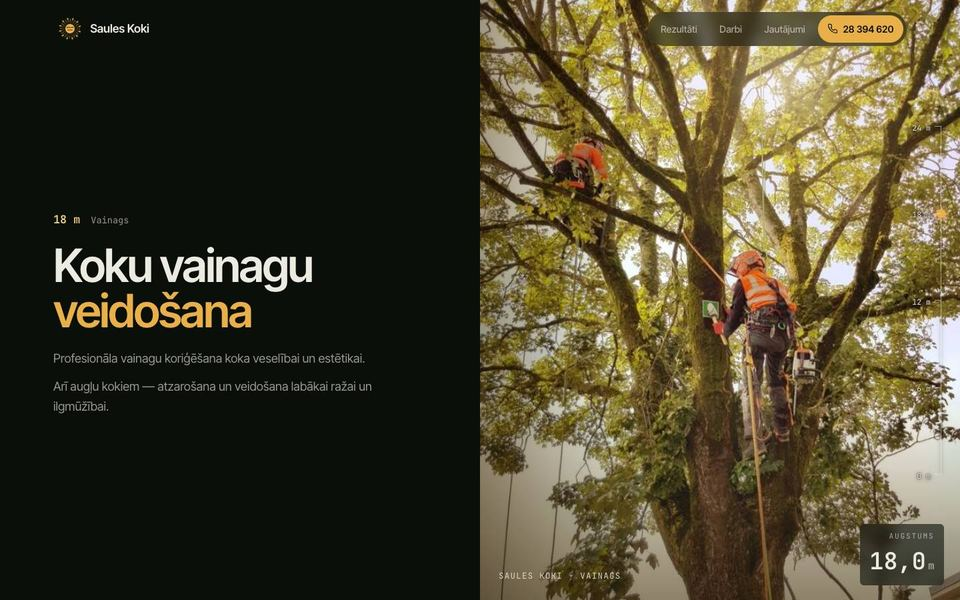
Your "descend the tree" idea with real photos. Split screen: text chapters on the left, photos slide up on the right (crown → branches → trunk → stump → team). Height gauge 24 m → 0 m; the sunlight fades as you go down.
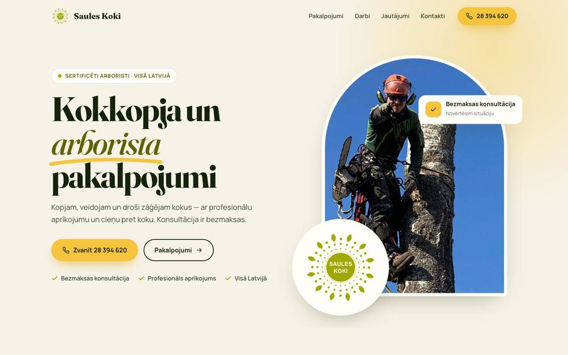
Cream and sun-yellow. Elegant serif headings. The logo grows its leaves when the page opens. Photo cards, a drag-to-compare before/after slider, and a gallery that opens photos full-size.
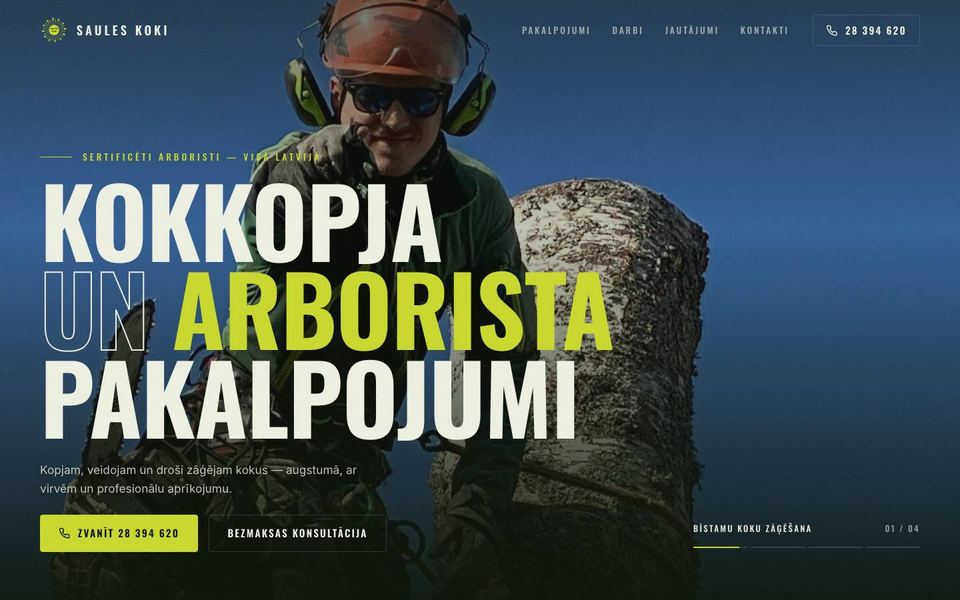
Full-screen photo slideshow with slow zoom. Huge bold headings. Moving text banner. Service list where a photo follows the mouse. Before/after that wipes across as you scroll.
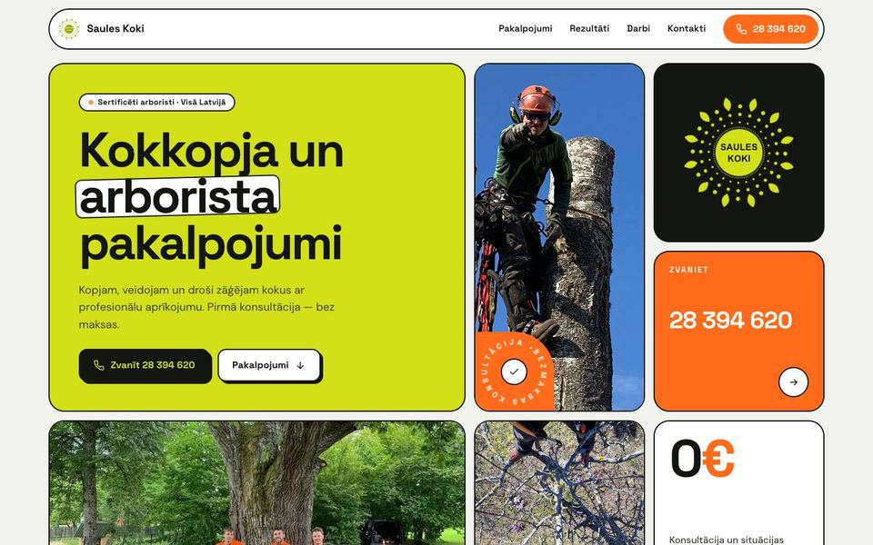
Lime + safety orange (from the helmets in the photos). A "bento" grid of tiles that tilt toward the mouse. Crossing tape banners, icon cards, a Pirms/Pēc toggle, and the stump steps.
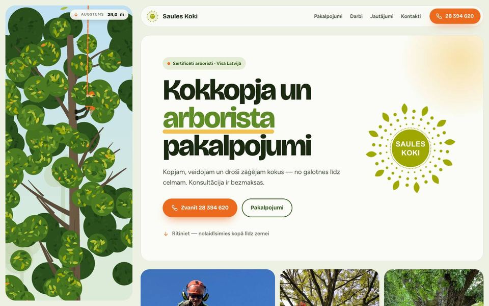
Your sketch: a tall drawn tree on the left. Scrolling takes you from the crown down to the roots while an arborist comes down the rope and a height counter goes from 24 m to 0 m. Leaves fall — more when you scroll fast.
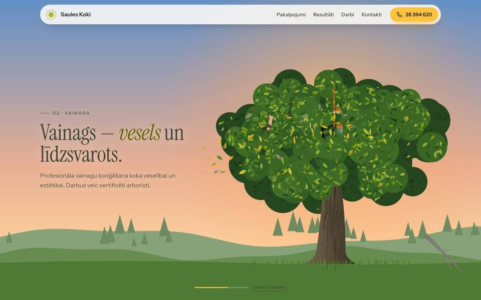
The first screen is a tree at night. Scrolling makes the sky turn to day, a climber cuts the grey dry branches one by one (they fall), and the sun rises over the crown — and turns into the Saules Koki logo.
og-image.jpg to the site root. It is the picture Facebook / WhatsApp show when someone shares the link. The live site points to it, but the file is missing today.img/ folder to the server next to the chosen page, and update the image paths from ../img/ to img/.img/. Before go-live, make smaller copies (about 1600px on the long side, compressed) so the page loads fast on phones.video/hero-1080.mp4 (desktop, 6.1 MB) and video/hero-720.mp4 (phones, 4.3 MB) were made from kling_20261003_VIDEO_Cinematic__165_0.mp4 with ./make-video.sh. Versions 6–8, 10, 12 and 13 play it (v6–8: hero background; v10: the second photo card; v12 and v13: the first screen). Version 11 has no video on purpose. If the chosen version uses it, upload the video/ folder next to the page. The 19.5 MB Kling original in this folder is only the source; it does not need to go on the server. If you get a new clip, run the script again.logo.svg was a picture inside an SVG and couldn't move.